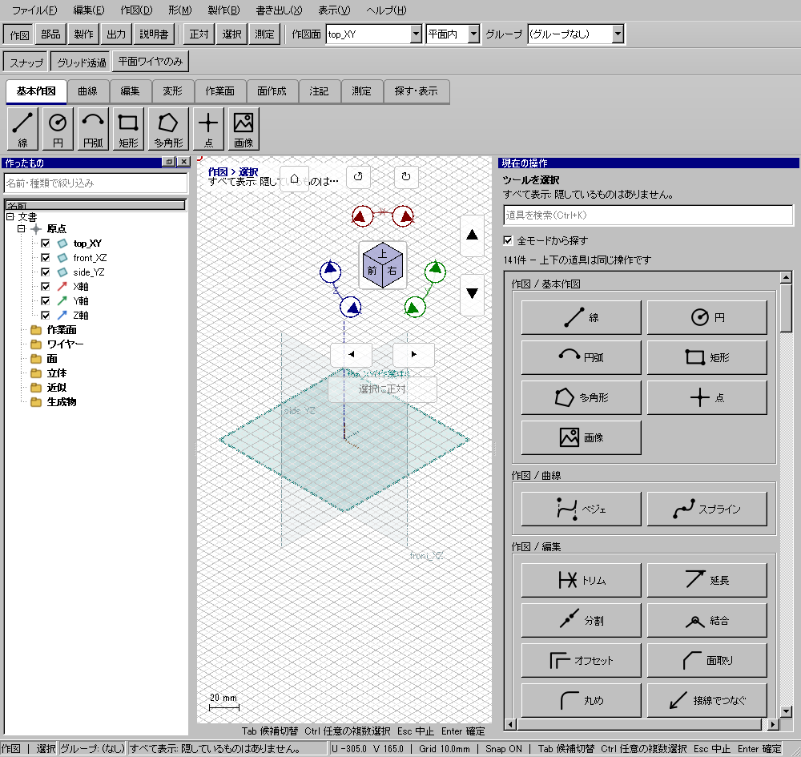
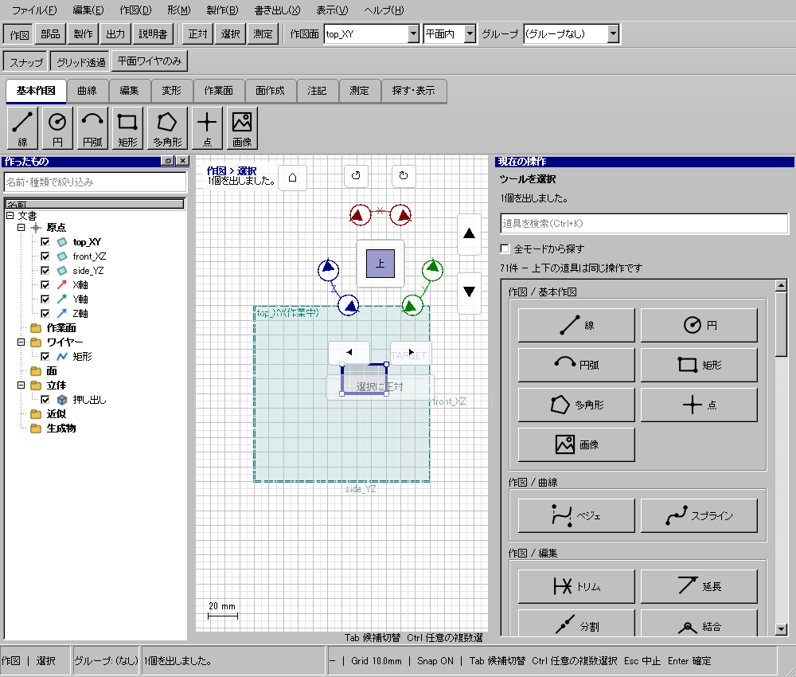
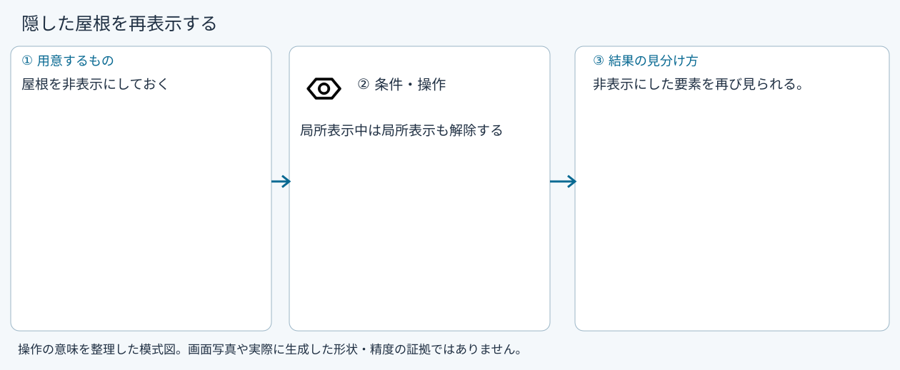

隠した屋根を再表示する
使う機能：すべて表示
隠れた要素をまとめて表示し、局所表示も解除します。表示を整えて作業中なら、必要なものだけ一覧で戻す方が分かりやすい場合があります。
非表示にした要素を再び見られる。
1 準備 — 元の図形から作る
屋根を非表示にしておく。
まだ用意できていなければ、次の手順を先に行ってください。既にモデルがある場合も、例の座標・大きさ・面の向きを自分のモデルへ読み替えます。
- 線・面・部品を取り違えずに選ぶ — 図形の作成から順に練習できます。
練習前にKCD2を別名保存します。数値の長さはmm、角度は度です。平面内のu/vと世界XYZを区別します。
2 使う道具を開く — 押す場所
別の入口：Ctrl+K → すべて表示を検索 → 候補の用途を確認して開きます。別モードなら「全モードから探す」をオンにします。


この実画面は既存操作試験の一場面で、下の数値例の完成画像とは限りません。
3 操作手順 — 一つずつ進める
1 すべて表示を押す
この段階で確認：非表示にした要素を再び見られる。
4 設定する欄と数値
ボタン名・欄名と、今回使う値を対応させてください。項目が出ていない場合は作り方・モードが合っているか確認し、ペイン内をスクロールします。
| 見る欄・役割 | この例の設定と意味 |
|---|---|
| 対象 | 全表示要素 |
| 幾何 | 変更なし |
選択の確認：役割欄の名前と3Dの強調を照合します。重なって拾いにくい時はTabで候補を替えます。全体を使う例では左一覧の要素名を選び、3Dの1辺選択と区別します。

5 確定して結果を確認
表示の切替、または設定画面での適用を確認します。この機能の説明にない「形状の確定」は不要です。
非表示にした要素を再び見られる。
形を作る操作では、元と結果の名前を分けて一覧で確認し、必要に応じて元を一時非表示にします。表示だけの機能では形状や要素数を変えることが目的ではありません。
6 取消・やり直し・保存
表示を元のモードや設定へ戻します。カメラや可視状態を幾何のUndoと取り違えないでください。
モデルの編集正本はKCD2、説明書の編集正本はKCIです。外部へ出力するだけの機能では、出力ファイルと編集元を両方残してください。
進めない場合 — 症状から戻る場所を探す
| 起きていること | 確認して直す場所 |
|---|---|
| 補助線が多くなった | 出来上がり表示や一覧で必要な種類を隠す |
この機能の入力条件：文書がありません。
計算中は処理表示を見ます。失敗が出たら、対象・入力条件を変えずに何度も押すのでなく、案内にある対象と条件を確認します。
参考画面の出典と確認範囲
試験名：隠した形は画面からも消える。試験全体の結果：passed。画像はコマンド呼出し直後で、入力待ち・下見の場合もあります。各段階の完成証拠ではありません。